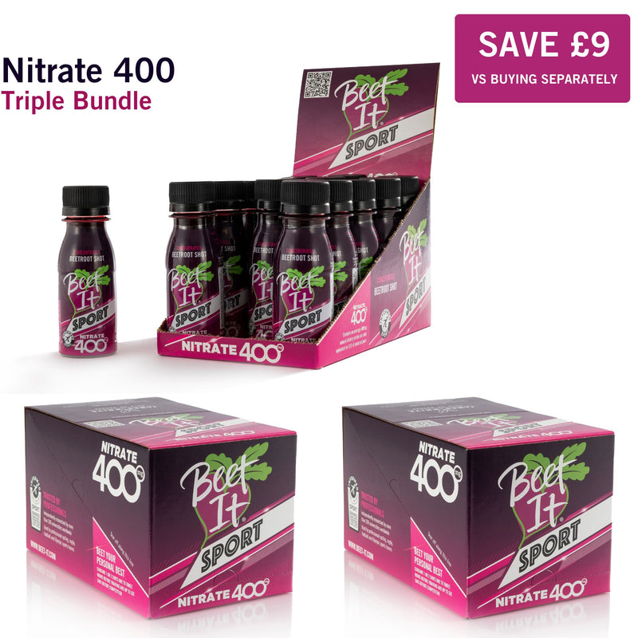
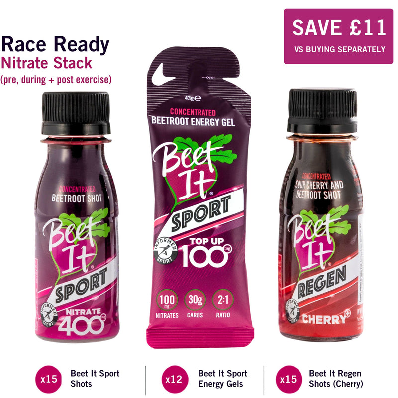
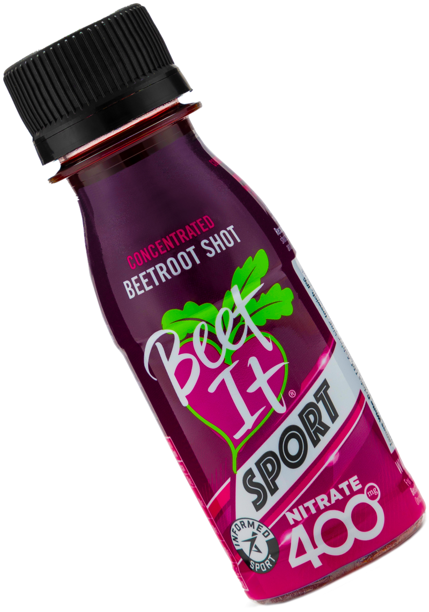
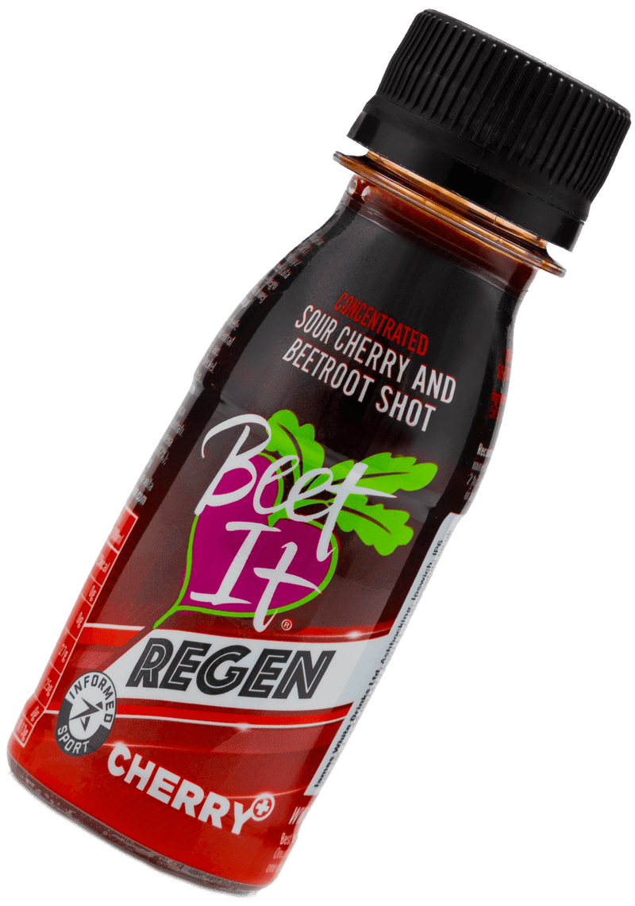
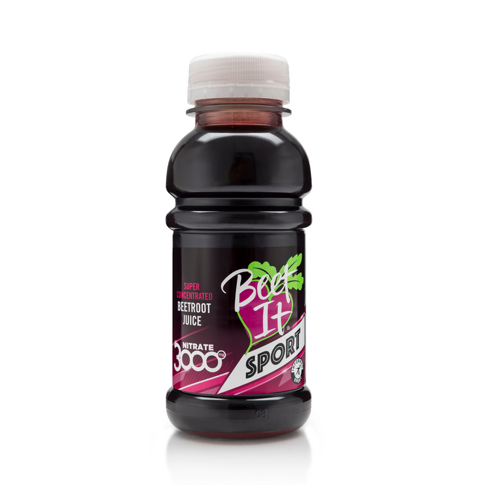
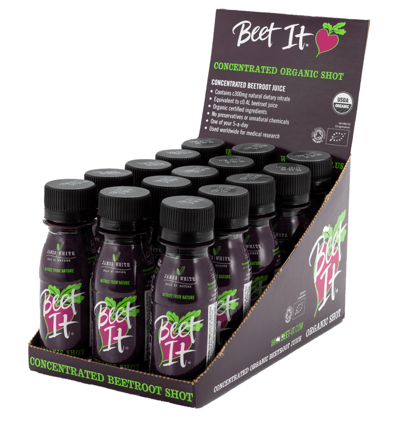
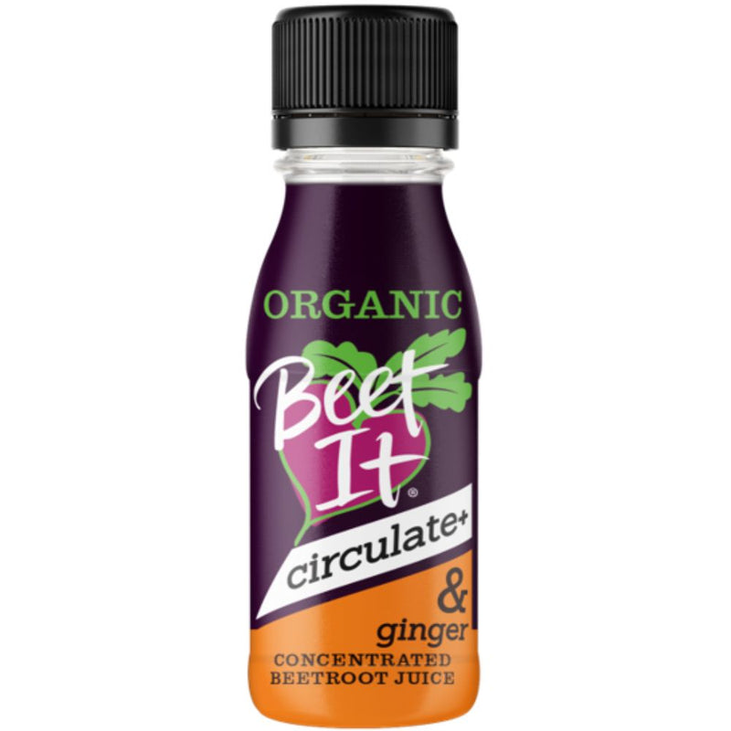
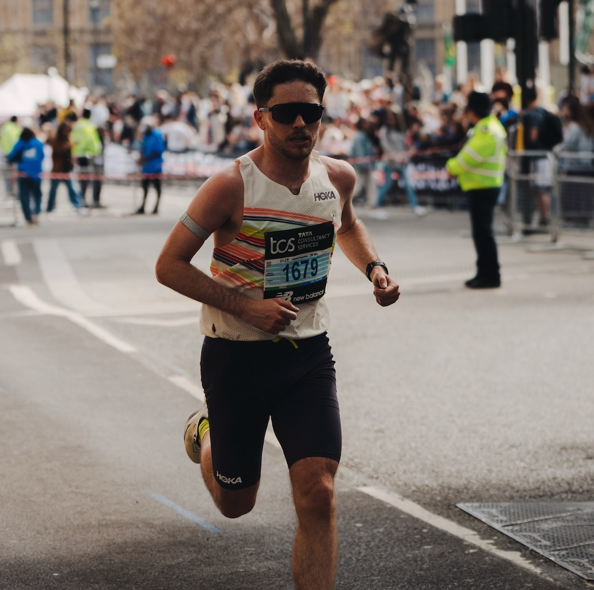

An outside-in view of the brand and its owned channels. Where it sits, what is holding it back, and where the next stage of growth comes from.
7 October 2026beet-it.comUK and USBrand and owned channelsPrepared by James Vickers
Data sourcesbeet-it.com (homepage, product, collection, Optimise, ambassador, Our Story and blog pages, product feed and page source, all read on 7 October 2026, plus a live browser check of the shop and product pages the same day), DataForSEO run on 7 October 2026 (Labs domain overviews and ranked keywords for UK and US Google, keyword overview for 35 category terms in both markets, live UK SERPs with AI Overviews for 15 terms, Backlinks summaries for eight domains and an On-Page crawl of 60 pages), Instagram and TikTok profiles read live, HypeAuditor and Socialblade for competitor social figures, Trustpilot, and trade and research sources listed at the end. Traffic figures from DataForSEO are modelled estimates. No SimilarWeb data, first-party analytics or sales data were used.
What this audit could not seeThe Meta Ad Library and Facebook pages were not reachable from the research setup, so live paid social creative is not assessed here and is the first thing I would review with the team. Audience demographics are inferred from public signals rather than measured. Where a figure is an estimate or my own judgement, it is labelled as one.
00Channel coverage
This is a brand and organic audit. It covers the channels Beet It owns and controls, which are the website, search, AI visibility, content, creative and organic social. Earned and paid channels are only touched where public data allowed. They need a second, more detailed review with account access and time spent at events.
Owned
Reviewed in depth. Five of seven channels covered in full, social in part, email not visible.
Earned
Light touch. Desk research on PR, links and reviews. Events and ambassadors not yet reviewed.
Paid
Not yet reviewed. No ad account or Ad Library access.
Trade and retail
Not yet reviewed. Marketplaces and export partners listed only.
Channel
Status
What this audit looked at
What a full review needs
Section
Owned
Website and ecommerce
Covered
Homepage, product, collection, Optimise and story pages, page source, product feed, a 60-page crawl and a live checkout check
Phase two is earned and paid. Events, ambassadors, paid social, paid search and retail are where most of the budget is likely to sit, and none of them can be judged properly from outside. A full review needs GA4 and Shopify data, the ESP, the Google and Meta ad accounts, the events and sampling plan with costs, and ambassador agreements. I would expect it to take the first four to six weeks in role, and it would test the brand consistency findings in section 11 against the creative that is actually running.
01Executive summary
Beet It Sport owns something almost no sports nutrition brand can claim. Its shots sit behind a large share of the published research on dietary nitrate, the brand says more than 300 studies, and the brand states that the 2018 IOC consensus statement on supplements drew on 12 papers that used them. The product is Informed Sport certified, delivers a consistent 400mg dose, carries a 4.3 average across 1,755 reviews on its own site and passed £2m in sales in 2025, up 35% on the year, with roughly two thirds of that from export. The substance is excellent. The way the brand presents that substance is what is holding it back.
The clearest problem is the brand itself. Beet It is a household name on supermarket shelves through the parent juice brand, which reached £5.7m in retail sales in 2025 and is the largest not-from-concentrate ambient juice SKU in the UK. Sport sits on the same name but presents itself with little discipline. On the Sport website I counted at least four visual treatments for product imagery, red discount stickers and black type that sit outside the brand palette and typefaces, two older brand architectures (an earlier Beet It logo on the organic range and an orange "circulate+" label) living alongside the Sport identity, a production image on the homepage still named TEST.png, and a Nitrate 400 page whose FAQ says the product is not Informed Sport certified while the body copy and footer say it is. Each of these is small. Together they read as a brand run on short-term activation, discount bundles, codes and promotional tiles, with nobody holding the line on how it looks and sounds. That is the pattern the IPA's long-term effectiveness work warns about. Activation buys this month's orders and slowly cheapens the brand that has to sell next year's.
The search data shows what that costs. beet-it.com ranks for 141 search terms in Google UK and earns an estimated 5,800 organic visits a month. Holland & Barrett ranks for 550 beetroot and nitrate searches and takes an estimated 10,100 visits a month from them, nearly double Beet It's total from its own subject. Science in Sport, with a new 500mg nitrate shot, now holds first place for "nitrate shot". Beet It is missing from the top 100 for beetroot supplement (3,600 UK searches a month, difficulty 1), beetroot capsules (5,400, difficulty 0), beetroot powder (8,100, difficulty 0) and nitric oxide supplement (1,900). With 1,234 linking domains and a DataForSEO authority score of 220, it sits below Torq (288) and HumanN (268), despite the research record. In AI search the picture is the same. Google's AI Overviews cite beet-it.com on four of 13 UK queries tested, all of them sport-specific, and on none of the buying or health questions, where the answers go to Holland & Barrett, Healthline and Amazon. On "nitrate shot" the AI Overview cites both beet-it.com and jameswhite.co.uk, so one brand appears as two.
The audience work is thin by necessity, but the signals agree. Instagram has 16,400 followers, TikTok 104 and I could not find an active YouTube channel. Science in Sport has 143,900 on Instagram, Precision Fuel & Hydration 118,400 and Holland & Barrett 236,500. The blog publishes every six to ten weeks, all from one author. The 30-plus ambassadors include a 2:14 marathoner and a Hyrox athlete, which is the right shape, but there is no visible system that turns them into reach or sales.
141
UK keywords for beet-it.com, about 5,800 est. visits a month (DataForSEO)
550
Beetroot and nitrate searches Holland & Barrett ranks for, against 118 for Beet It
4 of 13
UK AI Overviews citing beet-it.com, all sport-specific
4+
Different visual treatments for product imagery on one website
The three priorities that matter most
1. Put one brand system back in charge. A single set of distinctive assets (the plum, pink and lime, the extended type, the beetroot mark, one photographic style) applied to every packshot, bundle tile, ad and email, with promotional devices designed inside it rather than bolted on. Agree a brand-to-activation balance and protect it. This is the cheapest fix in the audit and the one with the longest tail.
2. Turn the research into reach. A research hub listing every study that used the product, a link-reclamation programme with the universities and teams behind them, and category pages for the beetroot supplement, capsule, powder and nitric oxide searches the brand is absent from. Consolidate the brand's web presence so search engines and AI models see one entity, not three domains.
3. Build the loading routine into the product. Nitrate works over several days, and the Optimise page already explains how. A step-by-step planner that ends in a filled basket would answer the most common question, capture the race date and give lifecycle email a reason to exist. I have built a working concept, the Beet It loading planner.
i
Overall assessment. A world-class product with a research record competitors cannot buy, sold by a brand that is spending its credibility on short-term promotion. Nothing here calls for repositioning. It calls for discipline. Brand system first, because every other pound works harder once the brand looks like the science behind it. Then search and AI visibility, because the demand exists and nobody specialist is meeting it. Then lifecycle and new audiences such as Hyrox.
02Brand overview
Origins and ownership
Beet It Sport is the performance range of Beet It, which James White Drinks has bottled since 2005. James White is based at Whites Fruit Farm in Ashbocking, Suffolk, holds a Royal Warrant and installed a £250,000 beetroot press there in April 2025. The Our Story page credits Lawrence Mallinson as founder of James White Drinks and Beet It Sport, and says the shot format came from work with England Rugby. The brand has supplied nitrate researchers since 2008. I could not confirm where the Sport concentrate shots themselves are produced, so I have not stated it.
Scale today
Trade press reported Beet It at £5.7m in retail sales value in 2025, its best year, with 58% growth over two years and listings in Sainsbury's, Tesco, Morrisons, Asda, Waitrose and Holland & Barrett. Beet It Sport passed £2m in 2025, up 35%, with about two thirds of sales from export markets led by the US. Sport is sold DTC on beet-it.com, through Myprotein and Sports Direct, by distributors including Beet It USA, Beet It Netherlands and a Malaysian partner, and historically on Amazon.
Positioning and proof
The page title reads "BEET IT SPORT | Endurance Supplement | Power of NO" and the hero describes "award-winning natural nitrate products made from beetroot juice." The proof stack is strong on paper. The site claims use in more than 300 studies, supply to over 150 professional teams across the UCI WorldTour, Premier League, Premiership Rugby, NFL and NBA, Informed Sport testing at LGC, European Specialist Sports Nutrition awards in 2020 and 2021 and NutraIngredients Product of the Year in 2022 and 2024. Past partnerships include the NN Running Team and Jumbo-Visma through Beet It Netherlands.
!
The proof is real but it is not managed. The Nitrate 400 page carries a FAQ entry that answers "Are these products Informed Sport certified?" with "No, the Beet It Organic Shot (70ml) is not Informed-Sport certified", directly under body copy and a footer that say every Sport product is certified. Review counts are pooled across products, so Regen Cherry+ and the gel both show 1,647 and three bundles show 1,415, and the Nitrate 400 summary of 1,755 sits over a star breakdown that adds up to 20. For a brand whose whole argument is trust, these are the details a sceptical athlete or a competitor will notice first.
03Market and category context
Market sizing
Level
Estimate
Basis and confidence
TAM
UK sports nutrition, about US$4.07bn in 2025, forecast US$8.64bn by 2033 (9.9% a year)
Grand View Research. A second source, Market Data Forecast, puts 2025 at US$2.68bn, so treat the range as directional.
Category
Global beetroot juice US$344m in 2025, rising to US$473m by 2031. Global beetroot powder US$418m in 2023, rising to US$581m by 2030
Mordor Intelligence, which names James White Drinks among the leaders, and Grand View Research. Medium confidence.
SAM
Natural nitrate products for endurance and team sport athletes in Beet It's markets
No credible published figure. One low-quality report sizes nitrate shots at about US$0.4bn, which I would not quote.
SOM
Beet It Sport above £2m in 2025, about a third of it UK by my estimate
Trade press for the total. The UK share is derived from the "two thirds export" statement and is an estimate.
The useful reading is that Sport is a small, fast-growing line inside a healthy parent brand, in a category whose demand is far larger than the specialist players currently serve. The search data later in this audit puts numbers on that gap.
PESTLE
Factor
What it means for Beet It Sport
Political
Two thirds of Sport sales are export. US tariff and import rules for food supplements are the main exposure, and EU distribution runs through a Dutch partner.
Economic
£2.17 a shot is premium against Holland & Barrett tablets at about 66p a serving and CherryActive concentrate at about £1.23. Price pressure pushes brands toward discount codes, which is exactly the habit this audit warns about.
Social
Mass participation (marathons, Hyrox at 1.5 million athletes last season and a target of 2 million) is growing, and the new audience is gym-led and video-first.
Technological
Generative search now answers "does beetroot juice work" before the click. Brands that are cited consistently in AI answers capture the consideration.
Legal
UK and EU rules restrict health claims on food. Imported reviews on product pages describing blood pressure and chest pain effects, and the contradictory Informed Sport FAQ, are compliance risks rather than marketing details.
Environmental
A solar-powered factory and British beetroot are credible sustainability stories that the Sport range barely tells.
04Audience profile
No SimilarWeb data was available, so this section is inferred from public signals and should be validated with GA4 and SimilarWeb in the first month.
Who the brand addresses. The ambassador roster covers marathon (Charlie Davis, 2:14), Hyrox (Harry Thompson), swimming (Jess Podger), ballet and more. Product copy talks mainly to cyclists and runners.
Who writes reviews. Reviews on the Nitrate 400 page come from runners, mountain bikers, gym users and people using it as a daily health habit, including several describing blood pressure effects. That last group is a real audience the Sport site cannot speak to under food-claim rules.
Where search demand sits. The highest-volume beetroot searches are health questions (beetroot juice benefits 9,900 UK a month) and formats (beetroot powder 8,100, capsules 5,400), not sport. The performance audience is smaller and more specific (beetroot juice for runners 210).
Social engagement. HypeAuditor puts Instagram engagement at 2.22%, below Precision Fuel & Hydration's 2.82% and above Science in Sport's 1.94%.
i
The audience is wider than the brand presentation. Athletes come for performance, health shoppers come for beetroot, and gym-goers come for a natural pre-workout. The site and creative speak mostly to the first group, while search and reviews show the other two arriving anyway.
05Competitive landscape
The competitive set mixes direct nitrate rivals, the UK endurance benchmark, and the retailers and health brands that take the wider beetroot demand. SERP data shows how buyers actually meet the category. Across 15 UK category searches, Amazon appeared in the top ten eight times, Reddit seven and eBay five. No specialist sports brand appeared more than once.
Beet It Sport
Science in Sport
Precision F&H
HumanN SuperBeets
Holland & Barrett
Styrkr
CherryActive
Role
Nitrate specialist
UK category leader, now in nitrate
UK endurance DTC benchmark
US beet health brand
Health retailer and own brand
Nitrate gel rival
Tart cherry rival to Regen
Nitrate product
Nitrate 400, 400mg, £2.17 a shot
GO Nitrates Shot, 500mg stated, £2.92 a shot
None
Chews and powder, nitrate not stated, about $1.33 a serving
Beetroot tablets, nitrate not stated, about 66p a serving
DTC with US, EU, CA storefronts, specialist retail
30,000+ US doors incl. Costco, Walmart
Own stores and online, UK and NL
Specialist retail
H&B, Sports Direct, online
Proof
300+ studies, Informed Sport, 150+ teams
Informed Sport, Loughborough partnership, INEOS 10+ years
Scientist bylines, IRONMAN partner
"#1 cardiologist recommended"
Retail scale
Informed Sport
Montmorency cherry research
UK organic keywords
141
2,353
2,753
216
173,707
n/a
n/a
Est. UK organic visits / mo
5,828
76,513
18,183
391
4.39m
n/a
n/a
Linking domains
1,234
5,262
3,109
1,962
n/a
n/a
n/a
Trustpilot
4.3 from 59
4.2 from 65,679
3.9 from 3 (not invited)
Blocked
4.2 from 22,638
Not checked
Not found
DataForSEO Labs and Backlinks, 7 October 2026. Price per serving from each brand's site or the retailer cited in the sources. Styrkr and CherryActive search data were not pulled in this pass.
Estimated UK organic visits a month, competitive set
Holland & Barrett (4.39m) is left off the scale. DataForSEO modelled estimates, 7 October 2026.
Social media comparison
Platform
Beet It Sport
Science in Sport
Precision F&H
HumanN
Holland & Barrett
Styrkr
Instagram
16.4k
143.9k
118.4k
51.2k
236.5k
4k
IG engagement
2.22%
1.94%
2.82%
n/a
n/a
n/a
TikTok
104
6,445
1.5k
8,845
79.4k
None
YouTube
None found
11.5k
11.0k
n/a
n/a
0.9k
Beet It Instagram and TikTok read from the live profiles, 7 October 2026. Others from HypeAuditor and Socialblade (July to October 2026) and, for Precision and Styrkr TikTok and YouTube, my own July 2026 benchmark. Facebook and X counts could not be retrieved for any brand.
Perceptual map
My assessment from positioning, proof and channel. Horizontal axis runs from specialist sport to mainstream health. Vertical axis is the strength of scientific evidence the brand puts forward.
Beet It sits where it should, top left, with more evidence than anyone in the set. The white space is directly to its right. Nobody combines strong evidence with an accessible, everyday presentation. HumanN reaches the mainstream with a cardiovascular story but no stated nitrate dose, and Holland & Barrett wins on reach with almost no proof. Beet It already has a household brand next door in the juice range. The question is whether Sport borrows that familiarity or keeps presenting as a niche supplement.
Points of parity and difference
Points of difference
Research record behind the actual product, not just the ingredient
A consistent, declared 400mg dose
British beetroot, family business, solar-powered factory
Household name in grocery through the parent brand
Points of parity it misses
A consistent visual identity across products and channels, which SiS and Precision both hold
Placements are my hypotheses from public signals, because product-level sales are not visible. They are the first thing I would check against the real numbers.
Stars
Nitrate 400 shots. The flagship, the research product and the main driver of 35% growth. Highest review count.
Question marks
Nitrate Energy Gel Top Up 100. Enters a crowded gel market with a real point of difference (100mg nitrate plus 30g carbohydrate).
Regen Cherry+. Against cheaper tart cherry concentrates in a 12,100 searches a month UK category where Beet It does not rank.
Cash cows
Nitrate 3000 concentrate. Team and research supply, steady demand, about £1.11 a serving.
The parent juice range funds the business but sits outside Sport.
Dogs
Organic Health shots on the Sport site. A health product inside a performance shop, with an older identity, no Informed Sport status and no sport story.
Pricing
Product
Pack price
Per serving
Nearest rival
Rival per serving
Nitrate 400 (15 × 70ml)
£32.50
£2.17
SiS GO Nitrates Shot (12)
£2.92
Nitrate 3000 (about 90 servings)
£100.00
£1.11
H&B beetroot tablets
£0.66
Regen Cherry+ (15)
£32.50
£2.17
CherryActive concentrate
£1.23
Energy Gel Top Up 100 (12)
£27.00
£2.25
Styrkr GEL30 Nitro+ (12)
£2.58
Pricing is well judged against the specialists, cheaper than SiS per shot and cheaper than Styrkr per gel. The risk is how it is sold. A first-order code, a 10% pop-up, "SAVE £9", "SAVE £18.50" and "Save 20%" stickers and a sale price all sit across one small range. Each one trains the buyer to wait for a deal on a product that has no real competitor on proof.
Value proposition canvas
Customer jobs, pains and gains
Job. Go faster or last longer on a target day, legally and safely.
Pains. Unsure how and when to take it, the taste, glass bottles in the post, not knowing if it works for them.
Gains. A PB, confidence that the product is tested, a simple routine.
How the brand answers today
Strong. Testing, dose consistency, research.
Partial. Dosing guidance exists on the Optimise page but is not personalised or tied to a race date.
Missing. Packaging and delivery reassurance (the main Trustpilot complaint), and any honest treatment of taste.
07Category entry points
Entry point
Evidence of demand
Who owns it today
Beet It position
"Race week, what should I take?"
beetroot juice for runners, 210 UK and 1,000 US a month, difficulty 5 to 6
Beet It in the UK (first place), Runna and Runners Connect in AI answers
Owned UKWeak US
"Is beetroot good for me?"
beetroot juice benefits 9,900 UK and 49,500 US
Healthline, BHF, Holland & Barrett
Absent
"Which beetroot supplement?"
beetroot supplement 3,600, capsules 5,400, powder 8,100 UK
Amazon, Holland & Barrett, eBay
Absent
"Natural pre-workout"
480 UK, 5,400 US, difficulty 0 to 1
Vivo Life, Amazon, coaching blogs
Absent
"How much, how often?"
how much beetroot juice per day, 1,300 UK
British Heart Foundation
39th
"Recovery after a hard race"
tart cherry juice 12,100 UK and 74,000 US
Planet Organic, health publishers
Absent
"Hyrox race prep"
Hyrox supplements 50 UK a month, tiny but new
Nobody
Open
Search volumes and positions from DataForSEO Labs, 7 October 2026. AI answer citations from live UK SERPs the same day.
08Content and editorial
Beet It Sport
Science in Sport
Precision F&H
HumanN
Frequency
Every 6 to 10 weeks (22 Sep, 15 Jul, 28 May, 13 Apr, 13 Jan 2026)
Several a month, latest 7 Oct 2026
Frequent, large library
Undated
Bylines
All Barney Mallinson (product development)
Mostly "SiS Team", one named sport scientist
Named sport scientists, founder Andy Blow
Brand
Themes
Dosing and timing, the gel, the 3% marginal gain, concentrate versus powder, the 180-study review
Marathon fuelling, sodium, caffeine, heat, UTMB
Sweat, sodium, carbohydrate, race plans
Heart health, family campaign
Standout
"Beetroot concentrate vs beetroot juice" ranks third for concentrated beetroot
Breadth and cadence
Planner and education engine
Mainstream health framing
Gap
No scientist voices despite 300+ studies. No video. No health or format content
Thin nitrate content
No nitrate
No sport
✓
The US site already shows the answer. beet-it.us earns an estimated 47,800 US organic visits a month, mostly from useful articles on nitrate-rich foods and nitric oxide, and ranks third for "foods high in nitrates". The UK Sport site has none of this. Repurposing that library for UK readers is the fastest content win available.
09PR and earned media
Brand
Notable 2025 to 2026 coverage
Quality
Beet It Sport
Food Manufacture (£250k press, Apr 2025), KAM / NamNews (record sales, Feb 2026), London Marathon expo stand C113 (2026), NutraIngredients Product of the Year 2024
Trade and industry only. I found no 2025 to 2026 consumer or endurance media reviews
Science in Sport
£82m bd-capital takeover (Apr 2025), Loughborough partnership extended (Feb 2026), Nike After Dark Tour (Sep 2026)
Financial, university and consumer
Precision F&H
IRONMAN 70.3 World Championship title partner 2026 to 2028, IRONMAN global hydration partner (2025), ASICS LA Marathon gel (Jan 2026)
Endurance trade and consumer, high cadence
HumanN
Manning family national TV campaign, Texas Athletics
Mainstream US, mostly self-reported
The irony is sharp. Beet It is the product scientists use, yet it gets less earned coverage than brands with far thinner evidence. Every new study that uses the shots is a press release the brand is not writing.
10Paid search and paid social
Paid search. DataForSEO detects no paid keywords for beet-it.com, Science in Sport, Precision or HumanN in UK or US Google. Its sample misses tightly targeted, Shopping and Performance Max activity, so this needs confirming in the Google Ads Transparency Center.
Paid social. The Meta Ad Library could not be reached from the research setup, so no competitor or Beet It ad creative is scored here. The onsite creative reviewed in the next section is the same material that typically feeds paid social, and the review should start there with the live account.
!
Gap to close in week one. A side-by-side Ad Library review of Beet It, SiS, Precision and HumanN, scoring each live ad for brand consistency, creative quality, and the balance between promotion and brand building.
11Brand, creative and messaging review
This is the most important section in the audit. Beet It is a household brand with a premium, science-led product, and it is being presented through creative that is inconsistent, often low in craft and heavily promotional. The short-term logic is understandable. The long-term effect is a slow erosion of what makes people choose and pay for Beet It.
What the product imagery shows

Bundle tile. Red "SAVE £9" sticker and black grotesque type, neither from the brand palette or fonts.Recovery bundle. A different red, a different badge shape, a different headline style again.

Race Ready stack. A third tile layout with its own icon row.

Homepage asset "TEST.png". Grey-ground tilted render, live in production under a test filename.

"Regan-NEW.png". The recovery hero is filed under a misspelt product name.

Nitrate 3000. Older, lower-fidelity packshot on its own style.

Organic range. Earlier Beet It logo and a dark green case, sold in the Sport shop.

"circulate+ & ginger". A third brand architecture, orange label and all.

Athlete imagery. One of only two people pictures among the 20 site images sampled.
Images taken from beet-it.com product feed and homepage, 7 October 2026, shown here for review only. Filenames as served by the site.
The pattern
No single photographic style. White studio packshots, grey-ground renders, transparent cut-outs and tilted floating bottles all sit side by side. Of 20 site images sampled, two show a person.
Promotion designed outside the brand. Discount stickers use reds and type the brand does not otherwise use, in three different badge styles across four bundle tiles, plus a first-order code banner and a "Limited-Time 10%" pop-up.
Three identities in one shop. Beet It Sport (plum, pink, lime), an earlier Beet It identity on the organic cases, and an orange "circulate+" sub-brand.
Copy that contradicts itself. The Informed Sport FAQ conflict, pooled review counts, page addresses that still carry long marketplace titles and tags such as "Diet Shakes" and "Drugstore".
Missing human and story content. No scientist faces, little athlete photography and no video on the site or YouTube, for a brand whose story is people and research.
Why it matters more than it looks
The IPA's effectiveness research (Binet and Field, The Long and the Short of It) found that short-term sales activation and long-term brand building work on different timescales, and that brands which tilt heavily toward activation see the effect fade as soon as spend stops, while brand building compounds. Their guidance for most categories is to keep around 60% of effort on brand. Distinctive asset research (Romaniuk, Building Distinctive Brand Assets) adds that recognition depends on using the same colours, shapes, type and imagery every time. Beet It has the assets, the beetroot mark, the plum and pink, the lime stripe. It is not using them consistently, and the promotional layer keeps overriding them.
For a premium, household name this has a specific cost. Each discount tile tells the buyer the price is negotiable. Each off-brand image makes the product look like any other supplement on Amazon. And because grocery shoppers know the Beet It name from the juice, a Sport presentation that looks cheaper than the shelf product undermines both.
The AI search angle
AI search raises the stakes. Generative answers and AI Overviews assemble a view of a brand from every consistent signal across the web. In the UK tests, beet-it.com was cited in four AI Overviews out of 13, always for sport-specific questions. For "nitrate shot", Google's AI Overview cited both beet-it.com and jameswhite.co.uk, alongside Science in Sport twice. The brand currently presents as Beet It, Beet It Sport, beet-it.com, beet-it.us and jameswhite.co.uk, with different product names and claims across them. Models reward clear, consistent entities. At the same time, AI-generated creative has made average-looking ads abundant and cheap. When anyone can produce a passable discount tile in seconds, craft and consistency are what make a brand recognisable, and that is where Beet It should be competing.
Messaging clarity
Test
Finding
Rating
Five-second clarity
"Natural nitrate products made from beetroot juice" is clear to athletes who know nitrate, less so to a gym-goer or health shopper
Partial
Value proposition
The research record is the most believable proposition in the category and is under-told on the homepage
Under-used
Consistency across channels
Three identities, multiple image styles, contradictory FAQ
Weak
Calls to action
Clear "Shop Now" paths, but every route ends in a discount
Promotional
Brand story
Suffolk family business, England Rugby origin, 300+ studies, solar factory. All true, mostly hidden on Our Story
Hidden
12SEO and GEO performance
5,828
Est. UK organic visits a month, beet-it.com
+33
Net UK keywords last period (67 new, 34 lost)
47,756
Est. US organic visits a month, beet-it.us
90.5
On-Page score across 60 crawled pages
Who takes beetroot and nitrate searches in Google UK
Estimated monthly organic visits from keywords containing "beet" or "nitr". DataForSEO Labs ranked keywords, 7 October 2026. Myprotein ranks 10th to 18th for Beet It's own brand terms because it resells the range.
Keyword gaps, UK monthly searches where beet-it.com is not in the top 100
Volume is the 12-month average. Difficulty (0 to 100) shown in the tooltip. DataForSEO Labs, 7 October 2026.
Linking domains, authority comparison
DataForSEO Backlinks summary, 7 October 2026.
What ranks today
beet-it.com is strong on its own name and the shot format. It ranks first for beet shot (2,400 a month), beet it, beet it sport nitrate 400 and beetroot juice for runners, second for beetroot shots and sixth to eighth for beet juice and beetroot juice (27,100 each), where the organic Health collection does the work. Keyword count grew last period, so the trend is positive. The constraint is breadth and authority, not decline.
AI visibility (GEO)
UK query
AI Overview
beet-it.com cited
Other sources cited
beetroot juice for runners
Yes
Yes
Runna, Reddit, Runners Connect
beetroot juice for athletes
Yes
Yes
PubMed, MDPI, University of Exeter
beetroot juice before running
Yes
Yes
Sports Injury Physio, Runna
nitrate shot
Yes
Yes
Science in Sport (twice), jameswhite.co.uk, Amacx
nitrate supplement
Yes
No
PMC, Examine, Amazon, GSSI
nitric oxide supplement
Yes
No
Healthline, Holland & Barrett, Bolt Pharmacy
beetroot juice benefits
Yes
No
Healthline, BHF, Holland & Barrett
how much beetroot juice per day
Yes
No
BHF, Medical News Today
beetroot capsules
Yes
No
Bolt Pharmacy, Tesco
beetroot powder
Yes
No
Amazon, Cleveland Clinic
natural pre workout
Yes
No
Amazon, iHerb, Squatwolf
energy gels
Yes
No
XMiles, Science in Sport, Myprotein
beetroot supplement
Yes
No
None returned
Google AI Overviews via DataForSEO live SERP (UK, English), 7 October 2026. ChatGPT, Perplexity and Claude answers were not tested in this pass.
Technical SEO findings (On-Page crawl, 60 pages)
Check
Pages affected
Severity
Images without alt text
55 of 60
High
Render-blocking resources
55
Medium
Duplicate content
21
High
Titles too long
20
Medium
Missing meta description
15
Medium
Deprecated HTML tags
22
Low
Broken page (4xx)
1
Low
Sitemap, robots.txt, SSL, HTTP/2, HTTPS redirect
All
Pass
Product page addresses carry full marketplace titles (the Nitrate 400 address is over 130 characters) and the product tags include "Diet Shakes", "Drugstore" and "MCF", which suggests Amazon listing data was imported into Shopify and never cleaned.
13SWOT summary
Strengths
More than 300 studies and the IOC consensus behind the product itself
Informed Sport testing and a consistent 400mg dose
£2m+ Sport sales growing 35%, with a £5.7m household parent brand
4.3 average across 1,755 onsite reviews
First place for its own core UK searches, and a strong US content site
Weaknesses
Inconsistent brand presentation, three identities and discount-led creative
141 UK keywords and a lower authority score (220) than Torq or HumanN
16.4k Instagram, 104 TikTok, no YouTube
Contradictory Informed Sport FAQ and pooled review counts
Blog every 6 to 10 weeks from one author, no scientist voices
Opportunities
Beetroot supplement, capsule and powder searches (17,100 UK a month) nobody specialist owns
Research hub and link reclamation from 300+ studies
A loading planner that captures race dates and drives lifecycle email
Hyrox, with 1.5m athletes and no nitrate partner named
Borrowing the juice brand's grocery familiarity
Threats
Science in Sport's 500mg GO Nitrates shot, already first for "nitrate shot"
Holland & Barrett and Amazon owning the wider beetroot demand
Discount habits eroding price power
Health-claim exposure from imported reviews
AI answers forming a view of the category without Beet It in it
14Strategic implications
The situation points to a clear order of work. Each step makes the next one cheaper.
Priority 1 · Brand
One brand system, applied everywhere
Codify the distinctive assets, set one photographic and packshot standard, redesign promotional devices inside the brand, retire or separate the older identities, and agree a brand-to-activation balance with a target close to the IPA's 60:40. Start with the website and the paid social account, because they reach the most people every day.
Priority 2 · Trust housekeeping
Fix what a sceptical athlete will check
Correct the Informed Sport FAQ, separate review counts by product, remove imported reviews that make health claims, clean page addresses and tags, add alt text, and set up Trustpilot replies and a packaging check for the delivery complaints.
Priority 3 · Search and AI visibility
Turn the research into reach
Build a research hub, run link reclamation with the universities and teams behind the studies, create category pages for beetroot supplement, capsules, powder and nitric oxide, bring the US nitrate content to the UK, and consolidate the brand's entities so AI answers see one Beet It.
Priority 4 · Product experience
Make the loading routine the product
A step-by-step planner, built on the Optimise guidance, that captures the race date and ends in a filled basket on beet-it.com. Then lifecycle email around that date. I have built a working concept to show how it could look in the Beet It brand.
A UK Hyrox pilot on the spring 2027 events, ambassador codes so creator reach can be measured, and a short-form video series fronted by athletes and the scientists behind the studies.
Questions to answer with internal data
How is Sport revenue split between DTC, UK retail and export, and how much of DTC comes through discount codes?
What share of spend goes to promotion versus brand building today?
Who owns brand guidelines and creative sign-off across Sport, the juice range and the export partners?
What is the repeat rate for first-time buyers, and how many move to subscription?
What is live in Meta and Google Ads right now, and how is it measured?
15Sources
Full source list
Brand
beet-it.com homepage, collections/all, Nitrate 400 page, Optimise, Ambassadors, Our Story, products.json and page source, read 7 October 2026
KAM / NamNews, Beet It record sales, 16 February 2026, kamcity.com
Food Manufacture, Beet It juice maker reveals £250k investment, 16 April 2025
Royal Warrant Holders Association, James White Drinks Limited
uk.trustpilot.com/review/beet-it.com, 7 October 2026
instagram.com/beetitsport and tiktok.com/@beetitsport, read live 7 October 2026. hypeauditor.com/instagram/beetitsport
Competitors
scienceinsport.com GO Nitrates Shot page. HypeAuditor and Socialblade SiS profiles. Loughborough University news, February 2026. Science in Sport acquisition announcement, 17 April 2025
precisionhydration.com. endurance.biz on IRONMAN 70.3 World Championship (March 2026) and ASICS LA Marathon (January 2026)